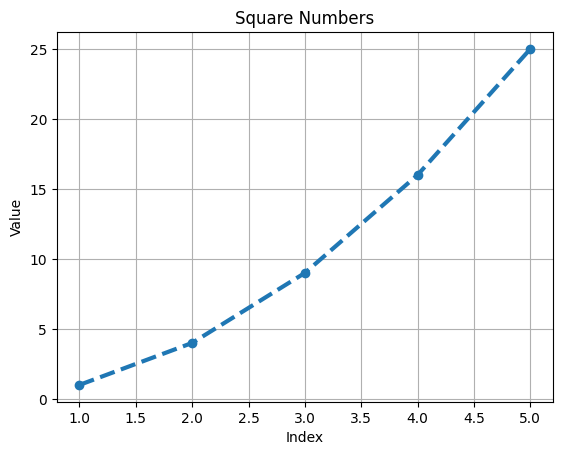
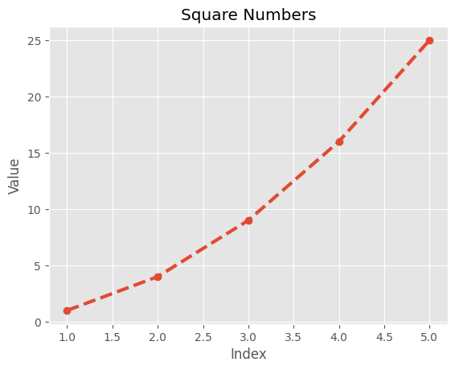
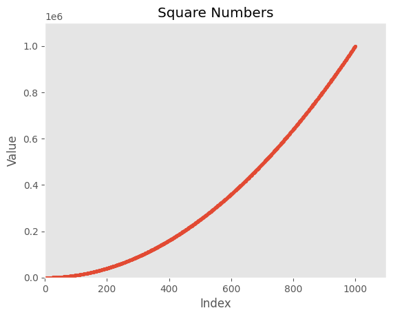

---
title: Generating data (visualizations, representations, etc.)
subtitle: Python basics
author: Kunal Khurana
categories: [Basics, Python]
jupyter: python3
toc: True
---Generating data (data visualization, representations, etc.)
PLotting tools
- Matplotlib- mathematical plotting library
- Plotly- viusalizations which work with digital devices.
plotting a line graph
import matplotlib.pyplot as plt
squares = [1, 4, 9, 16, 25]
# Create a figure and axis
fig, ax = plt.subplots()
# Plot the squares with a blue line
ax.plot(squares, linewidth=3, marker='o', linestyle='--')
# Customize the plot
ax.set_title('Square Numbers')
ax.set_xlabel('Index')
ax.set_ylabel('Value')
ax.grid(True)
# Show the plot
plt.show()correcting the plot
import matplotlib.pyplot as plt
input_values = [1,2,3,4,5] #adding this would fix it
squares = [1, 4, 9, 16, 25]
# Create a figure and axis
fig, ax = plt.subplots()
# Plot the squares with a blue line
ax.plot(input_values, squares, linewidth=3, marker='o', linestyle='--')
# Customize the plot
ax.set_title('Square Numbers')
ax.set_xlabel('Index')
ax.set_ylabel('Value')
ax.grid(True)
# Show the plot
plt.show()
Using built-in Styles
import matplotlib.pyplot as plt
plt.style.available['Solarize_Light2',
'_classic_test_patch',
'_mpl-gallery',
'_mpl-gallery-nogrid',
'bmh',
'classic',
'dark_background',
'fast',
'fivethirtyeight',
'ggplot',
'grayscale',
'seaborn-v0_8',
'seaborn-v0_8-bright',
'seaborn-v0_8-colorblind',
'seaborn-v0_8-dark',
'seaborn-v0_8-dark-palette',
'seaborn-v0_8-darkgrid',
'seaborn-v0_8-deep',
'seaborn-v0_8-muted',
'seaborn-v0_8-notebook',
'seaborn-v0_8-paper',
'seaborn-v0_8-pastel',
'seaborn-v0_8-poster',
'seaborn-v0_8-talk',
'seaborn-v0_8-ticks',
'seaborn-v0_8-white',
'seaborn-v0_8-whitegrid',
'tableau-colorblind10']# using style
import matplotlib.pyplot as plt
input_values = [1,2,3,4,5] #adding this would fix it
squares = [1, 4, 9, 16, 25]
#use style
plt.style.use('fast')
# Create a figure and axis
fig, ax = plt.subplots()
# Plot the squares with a blue line
ax.plot(input_values, squares, linewidth=3, marker='o', linestyle='--')
# Customize the plot
ax.set_title('Square Numbers')
ax.set_xlabel('Index')
ax.set_ylabel('Value')
ax.grid(True)
# Show the plot
plt.show()
Plotting and Styling Individual Points with scatter()
# using style
import matplotlib.pyplot as plt
input_values = [1,2,3,4,5] #adding this would fix it
squares = [1, 4, 9, 16, 25]
#use style
plt.style.use('fast')
# Create a figure and axis
fig, ax = plt.subplots()
# Plot the squares with a blue line
ax.scatter(2,4,s=200)
# Customize the plot
ax.set_title('Square Numbers')
ax.set_xlabel('Index')
ax.set_ylabel('Value')
ax.grid(True)
# Show the plot
plt.show()
Caluculating data automatically
x_values = range(1,1001)
y_values = [x**2 for x in x_values]
plt.style.use('fast')
fig, ax = plt.subplots()
ax.scatter(x_values, y_values, s= 10)
# Customize the plot
ax.set_title('Square Numbers')
ax.set_xlabel('Index')
ax.set_ylabel('Value')
ax.grid(False)
#Set the range for each axis
ax.axis([0, 1100, 0, 1100000])
plt.show()